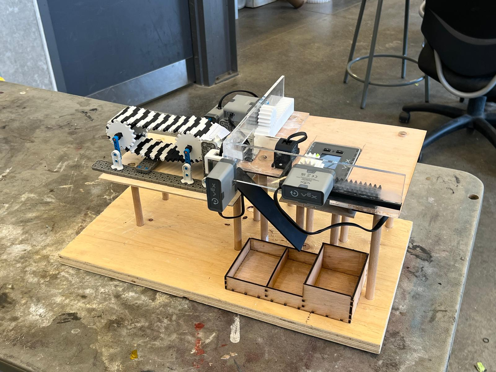
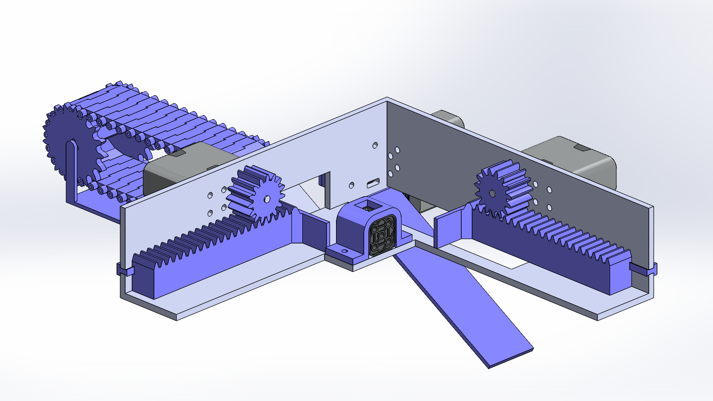
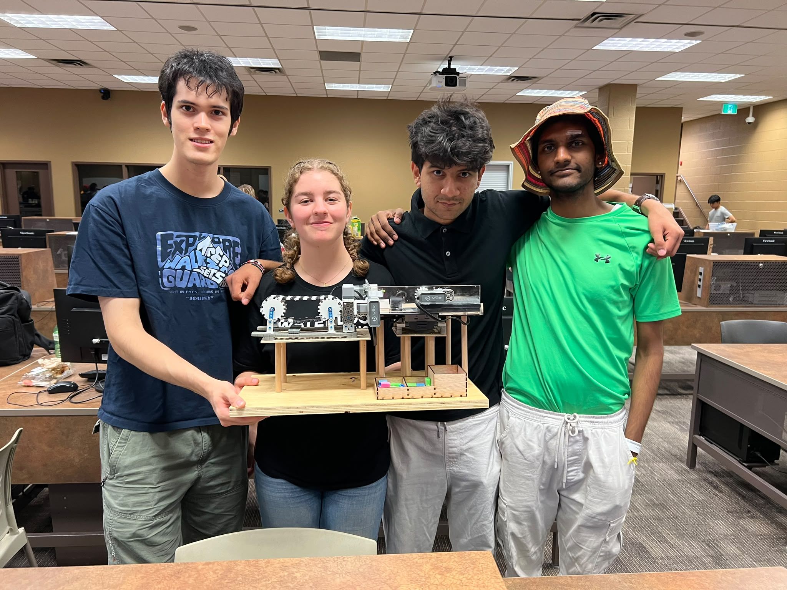

VEX
Autonomous LEGO Sorter
ME101 Design Project · August 2026

Overview
VEX LEGO Sorter is an autonomous block identifier and sorting system developed by a four-person team for ME101. The machine automatically feeds rectangular LEGO blocks, identifies them by colour or dimensions, and drops them into one of three sorting compartments.
- System: conveyor-fed VEX IQ robot with optical and distance sensors, two rack-and-pinion mechanisms, and a motorized trapdoor.
- Fabrication: SOLIDWORKS-designed parts combining 3D-printed PLA, laser-cut acrylic/HDF, wooden dowels, and a plywood base.
- My work: mechanical design, fabrication, and assembly of the measuring and sorting systems.
Mechanical Design

The final design uses a conveyor belt to move each block into a measuring platform. A distance sensor detects the incoming block, while two motor-driven rack-and-pinion arms push it into a corner and measure its dimensions from motor-encoder movement. An optical sensor identifies red, green, or blue blocks, and a motorized trapdoor directs each block into the appropriate bin.
Software & Control
The software was organized into 16 functions covering calibration, block detection, dimension measurement, colour identification, sorting, data storage, and safe shutdown. At startup, the system calibrates the racks and trapdoor, then lets the user choose between sorting by colour or by block area. Each cycle is completed automatically, with counters tracking the number of blocks in each category.
Validation
- Accuracy: 20/20 blocks were correctly identified by colour and delivered to the correct bin (100%).
- Measurement: encoder-based dimensions differed from calliper measurements by a maximum of 1.70 mm, below the 5 mm requirement.
- Performance: the completed device measured 54 × 30 × 27 cm and averaged 12.3 seconds per sort, meeting the 60 × 60 × 30 cm and 15-second limits.
Engineering Challenges
Early testing exposed problems with rack calibration, sensor interference, and consecutive motor movements. Backstops created a repeatable calibration reference, a 15-second conveyor timeout prevented jams from stalling the system indefinitely, and short delays between rack movements resolved a current-sensing issue.
Team & Outcome

VEX LEGO Sorter was built with Livia Welch, Abdurrahim Baradia, and Aditya Madaria. The project combined mechanical design, manufacturing, programming, and system integration, and the final prototype met every requirement in the engineering specification.